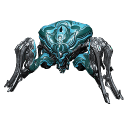
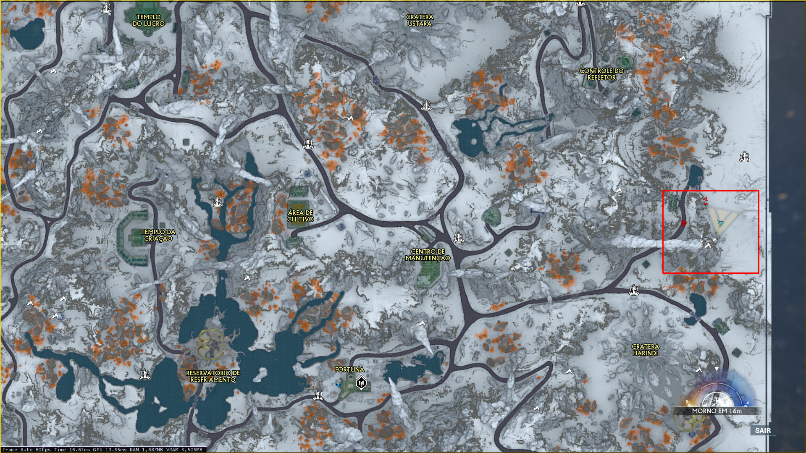
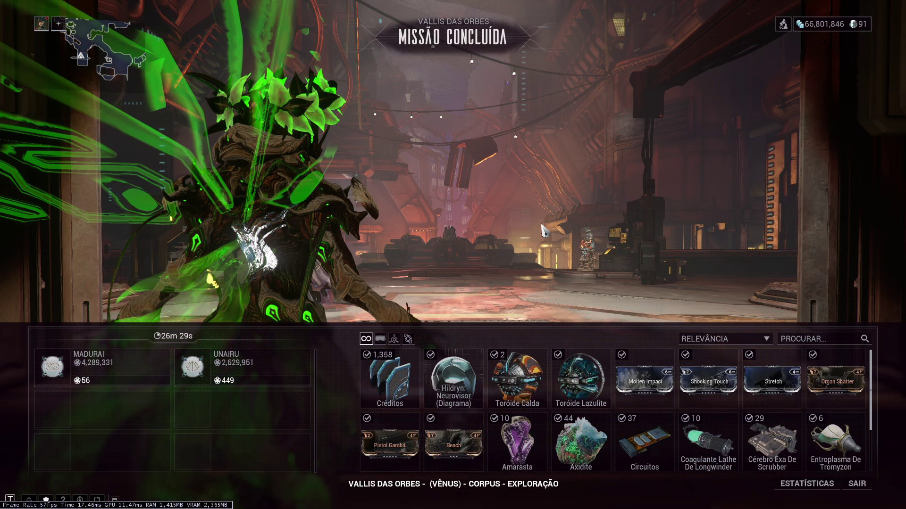

Se equipando para fazer a Usurpadora: Guia de iniciante
Tudo que você precisa saber para começar a caçar a Usurpadora no Vallis Das Orbes.

Guias
Este guia está dividido em quatro partes:
Como funciona?
As mecânicas da Usurpadora: Térmia, Chaminés, Raknóides e Superaquecimento.
Equipamentos
Warframe, armas, Operador e Amp recomendados, para lidar com as diferentes partes da luta.
Modo Iniciante
Uma configuração simplificada para começar a caçar a Usurpadora.
Demonstrações
Vídeos de caçadas reais contra a Usurpadora.
Requisitos
Para caçar a Usurpadora, você precisa:
- Possuir ao menos uma unidade de Térmia Diluida em seu inventário.
- Iniciar a caçada acessando o Convés 12.
Alternativamente, alcançando o rank 5 (Camarada) com a União Solaris também adiciona a opção de iniciar uma caçada à Usurpadora pelos bastidores em Fortuna.

Térmia Diluída é um recurso obtido durante o evento sazonal "Fraturas de Térmia". Apesar do evento ser sazonal, a Usurpadora pode ser caçada a qualquer momento, desde que o recurso exista em seu inventário ou outro jogador o possua.
Recompensas
Os principais motivos para caçar a Usurpadora são:
- Componentes da Hildryn
- Recursos de reputação com os Vox Solaris (Toróide Lazulite).
- Recursos gerais de Vallis do Orbe.
